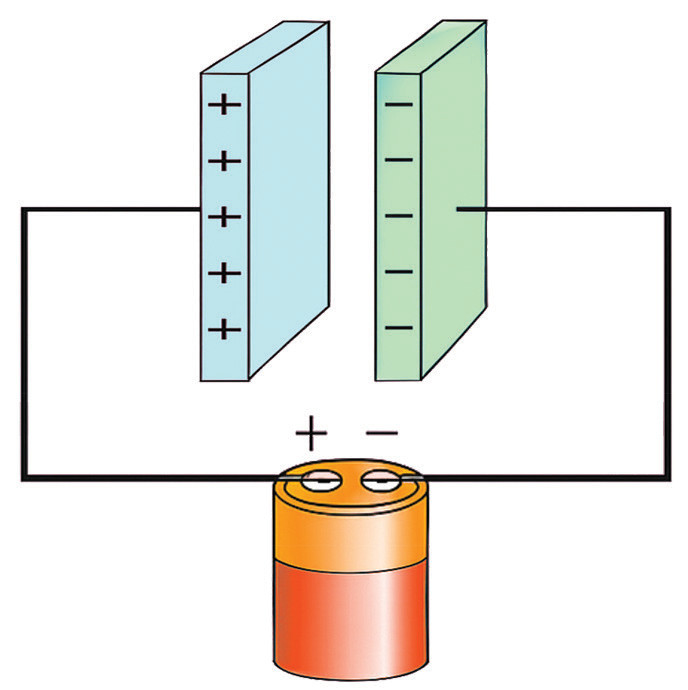
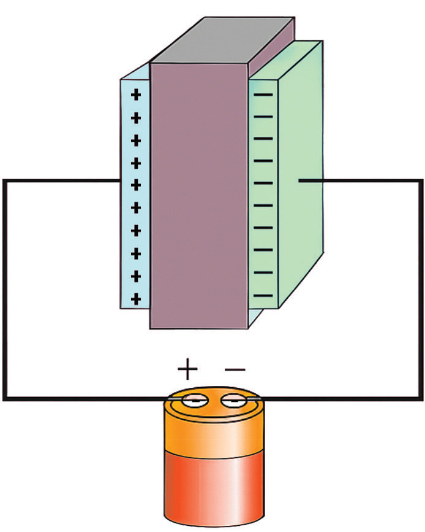
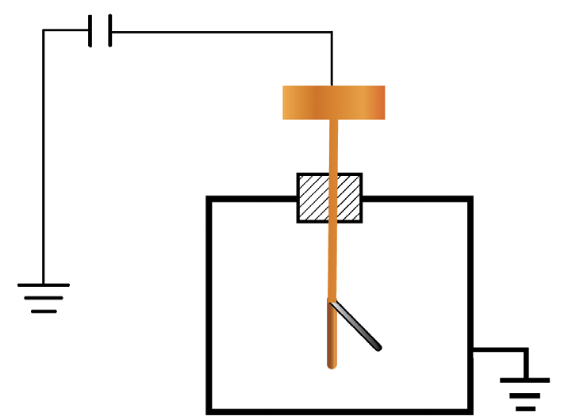

Factors affecting capacitance
The capacitance of a parallel plate capacitor is affected by three major factors, namely:
- (a) area of the plates;
- (b) insulating property of the medium;
- and
- (c) distance between the plates.
(a) Area of the plates
An increase in the area of the plates causes a decrease in the potential difference between the plates, hence an increase in capacitance.

From experiments, , where is the capacitance, and is the effective area between the plates Y and Z, as shown in Figure 1.38. A distance, , separates the plates. If is kept constant, and Z is moved parallel to Y, the overlapping area is varied.
(b) Insulating property of the medium
If the air between the plates of a capacitor is replaced with another insulating medium, such as glass, paper, or polythene, while the area and the distance remain constant, the capacitance increases. From experiments, capacitance is directly proportional to the insulating property of the medium between plates Y and Z (Figure 1.39).

(c) Distance between plates
A charged capacitor is connected such that one plate is earthed while the other is connected to an electroscope, as shown in Figure 1.40. The distance between the plates varies, and its effect on the leaf divergence is noted. It is observed that the closer the plates are to each other, the smaller the divergence and the lower the potential. In conclusion, capacitance increases with the closeness of the plates.
Thus, , where is the capacitance, and is the distance between plates.
